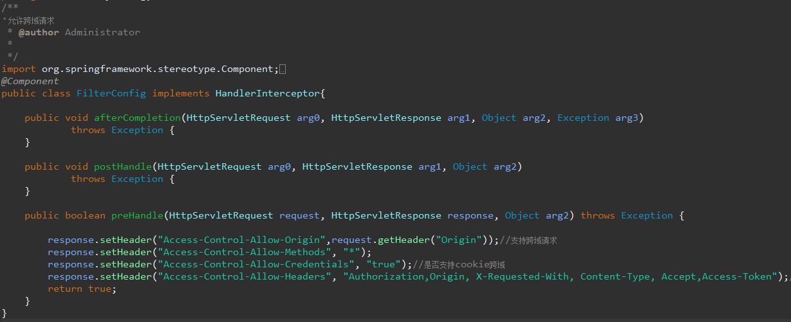

问题: 前端跨域访问后端接口, 在浏览器的安全策略下默认是不携带cookie的, 所以每次请求都开启了一次新的会话.
在后台打印sessionID我们会发现, 每次请求的sessionID都是不同的, 既然每次请求都是一个新的会话, 那我们去获取session的时候自然就是null了.
解决办法如下:
环境:
vue 2.0
springboot 2.1.6
1. 在vue引入axios的位置添加以下代码
import axios from 'axios'
axios.defaults.withCredentials = true;// 允许跨域携带cookie
1. 新建一个FilterConfig类, 编写一个拦截器类
/**
* 允许跨域请求
* @author Administrator
*
*/
import org.springframework.stereotype.Component;
import org.springframework.web.servlet.HandlerInterceptor;
import javax.servlet.http.*;
@Component
public class FilterConfig implements HandlerInterceptor{
public void afterCompletion(HttpServletRequest arg0, HttpServletResponse arg1, Object arg2, Exception arg3)
throws Exception {
}
public void postHandle(HttpServletRequest arg0, HttpServletResponse arg1, Object arg2)
throws Exception {
}
public boolean preHandle(HttpServletRequest request, HttpServletResponse response, Object arg2) throws Exception {
response.setHeader("Access-Control-Allow-Origin",request.getHeader("Origin"));//支持跨域请求
response.setHeader("Access-Control-Allow-Methods", "*");
response.setHeader("Access-Control-Allow-Credentials", "true");//是否支持cookie跨域
response.setHeader("Access-Control-Allow-Headers", "Authorization,Origin, X-Requested-With, Content-Type, Accept,Access-Token");//Origin, X-Requested-With, Content-Type, Accept,Access-Token
return true;
}
}
2. 在创建一个SpringMVCConfig类, 请用拦截器
/**
* 启用跨域配置
* 编写SpringMVCConfig类使用FilterConfig中的配置
* @author Administrator
*
*/
import org.springframework.beans.factory.annotation.Autowired;
import org.springframework.boot.SpringBootConfiguration;
import org.springframework.web.servlet.config.annotation.InterceptorRegistry;
import org.springframework.web.servlet.config.annotation.WebMvcConfigurerAdapter;
@SuppressWarnings("deprecation")
@SpringBootConfiguration
public class SpringMVCConfig extends WebMvcConfigurerAdapter{
@Autowired
private FilterConfig filterConfig;
public void addInterceptors(InterceptorRegistry registry){
registry.addInterceptor(filterConfig).addPathPatterns("/**");
}
}
问题解决, 重启工程后我们再次打印每次请求的sessionID就会发现sessionID是一致的, 当然也就可以获取我们存入session的内容了.
System.out.println(request.getSession().getId());